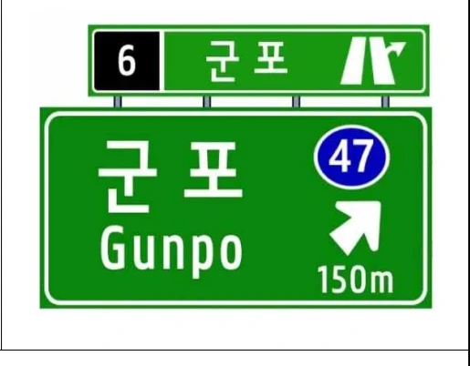

951. Дараах чиглэлийн тэмдэгтэй холбоотой тайлбараас зөв нь аль вэ?

- ①Урд 150 м-т 6 дугаар улсын чанартай авто замтай нийлнэ.
- ②Хурдны замын орох, гарах уулзварын (IC) нэр нь Гүнпо юм.
- ③Хурдны замын эхлэлээс 47 дахь орох, гарах уулзвар(IC) гэсэн утгатай.
- ④Хурдны замыг хурдны замтай холбодог салбар уулзварын (JCT) тэмдэг юм.
Хариулт харах
Зөв хариулт
② Хурдны замын орох, гарах уулзварын (IC) нэр нь Гүнпо юм.
Үндэслэл
Хурдны замын эхлэлээс 6-р уулзвар болох Гунпогийн уулзвар (IC) 150м-ийн урд байдаг бөгөөд уулзвараар гарвал Гунпо болон Үндэсний 47-р замтай таарч болно.
Үндэслэлийн текст нь машин орчуулга.